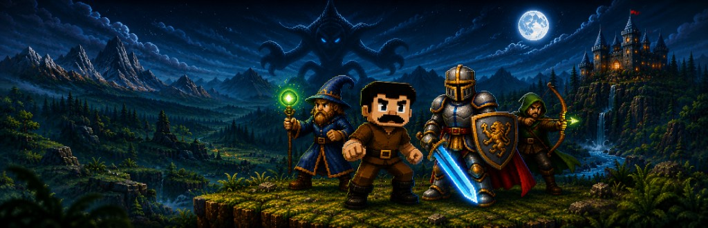
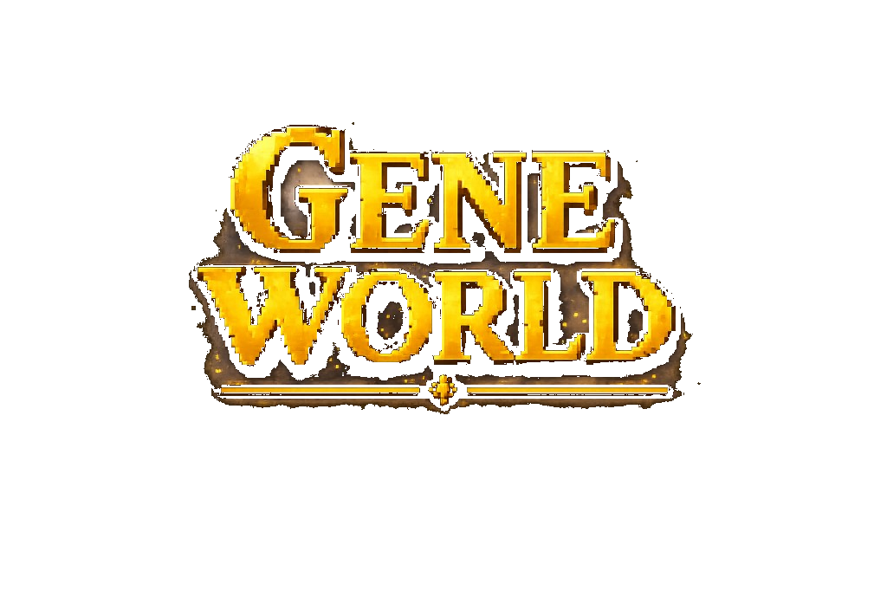
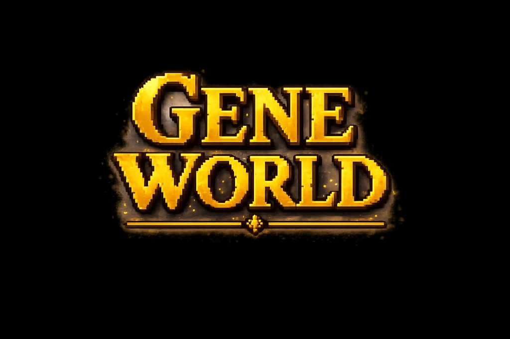

Gene World
RPG 2D em mundo aberto com mapa procedural, nove biomas, combate por atributos e armas, crafting, NPCs com IA e coop online/LAN.
Lançamento previsto para setembro de 2026 na Steam.


RPG 2D • Mapa procedural
Kit de imprensa e criadores — baixe logos, banners, capturas e informações oficiais do Gene World para matérias, vídeos, streams e divulgação.
O arquivo MediaKit.zip reúne assets em alta resolução e dados do jogo prontos para uso editorial.

Arquivo oficial
Pacote compactado com materiais visuais e informações do jogo. Ideal para imprensa, influencers e parceiros de conteúdo.
Hospedado no Google Drive. Se o download não iniciar, use «Ver no Google Drive» e escolha transferir pelo menu do arquivo.
RPG 2D em mundo aberto com mapa procedural, nove biomas, combate por atributos e armas, crafting, NPCs com IA e coop online/LAN.
Lançamento previsto para setembro de 2026 na Steam.
Siga @geneworldgame no Instagram, TikTok, YouTube e Reddit (r/GeneWorldGame).